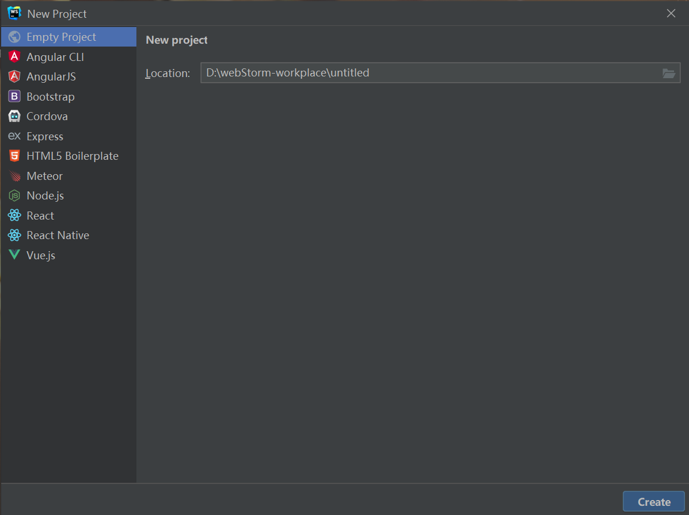
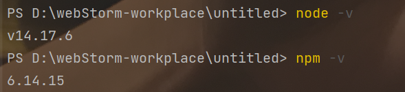
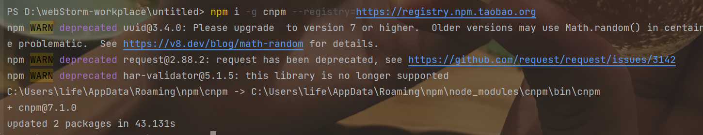
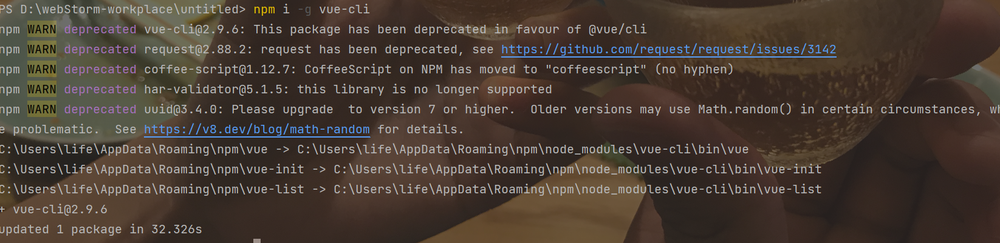
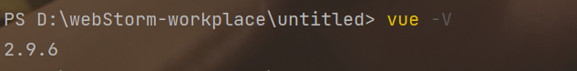
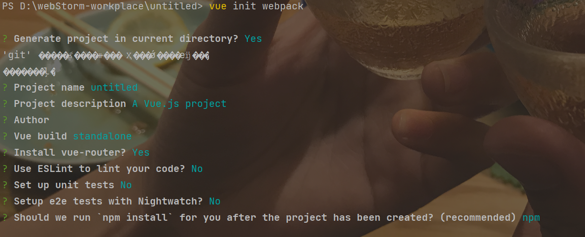
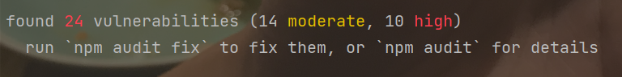
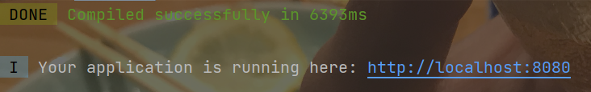
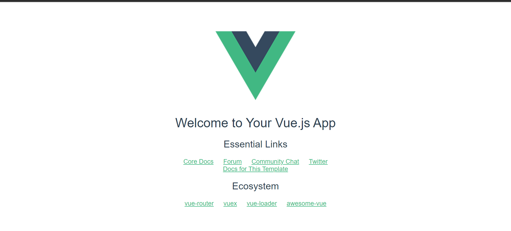
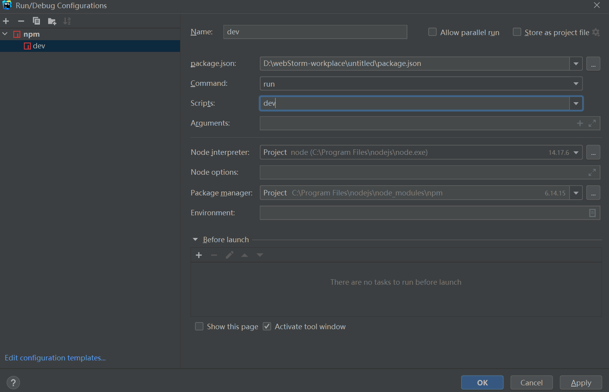

搭建简单的前后端分离项目
搭建前后端分离项目
后端
创建一个正常的Spring Boot项目即可
前端
我采用的Vue框架，编译器是WebStrom
1. 创建项目
在webStrom中搭建一个空的项目

2. 查看node和npm版本
打开编译器的Terminal命令行界面，输入指令
node -vnpm -v
3.安装vue脚手架工具
继续在命令行界面输入指令，首先安装npm的淘宝镜像，
xxxxxxxxxxnpm i -g cnpm --registry=https://registry.npm.taobao.org
等下载完成之后继续安装vue脚手架工具：
xxxxxxxxxxnpm i -g vue-cli
安装完成之后查看vue版本：
xxxxxxxxxxvue -V
4.初始化vue项目
继续在命令行输入，然后配置一些初始化的属性
xxxxxxxxxxvue init webpack
在初始化时可能会有一些漏洞，但问题不是很大，不需要执行他的 'npm audit fix '指令

5.运行前端项目
等待初始化结束之后，输入
xxxxxxxxxxnpm run dev即可运行前端项目


配置启动项
添加一个npm 的 run Configuration，scripts选择dev

6.封装axios接口
在src目录下新创建一个axios目录，在里面创建文件index.js
x// services/global.js"import axios from 'axios'import { Message, Loading } from 'element-ui'let loadingInstance = null// 初始化实例let http = axios.create({// 请求超时时间 baseURL: '', timeout: 7000, headers: { 'Content-Type': 'application/x-www-form-urlencoded' }})http.interceptors.request.use((config) => { loadingInstance = Loading.service({ lock: true, text: 'loading...' }) return config}, (error) => { return Promise.reject(error)})// 响应拦截器http.interceptors.response.use((response) => { loadingInstance.close() return response}, (error) => { console.log('TCL: error', error) const msg = error.Message !== undefined ? error.Message : '' Message({ message: '网络错误' + msg, type: 'error', duration: 3 * 1000 }) loadingInstance.close() return Promise.reject(error)})// 封装axios的post请求http.post = (url, params) => { return new Promise((resolve, reject) => { axios.post(url, params).then(response => { resolve(response.data) }).catch(err => { reject(err) }) })}// 封装axios的apisPost请求http.apisPost = (url, params) => { url = '/apis' + url return http.post(url, params)}// 封装axios的get请求http.get = (url, params) => { return new Promise((resolve, reject) => { axios.get(url, params).then(response => { resolve(response.data) }).catch(err => { reject(err) }) })}// 封装axios的apisGet请求http.apisGet = (url, params) => { url = '/apis' + url return http.get(url, params)}export default http7.配置代理转发
在config/index.js中找到proxyTable项，添加请求后的代理信息：
xxxxxxxxxx'/apis': { target: 'http://localhost:8888', // target host 本人后端接口（本地电脑IP）地址 changeOrigin: true, // needed for virtual hosted sites pathRewrite: { '^/apis': '' // rewrite path }}8. 请求调用
xxxxxxxxxximport axiosHttp from '../axios/index'export async function getMessage(){ let msg; await axiosHttp.apisGet('/message') .then(data =>{ console.log(data) msg = data }) console.log("msg"+msg) return msg;}export async function sedMessage(msg){ await axiosHttp.apisPost("/message/"+msg);}export async function postJson(name, age){ let obj ={ "name": name, "age": age } axiosHttp.apisPost("/json/"+JSON.stringify(obj))}